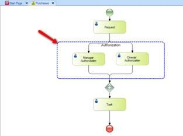
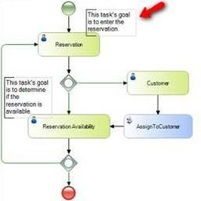
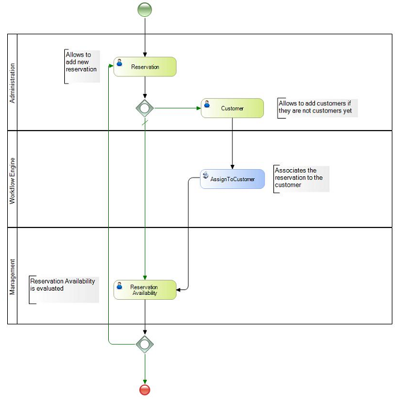
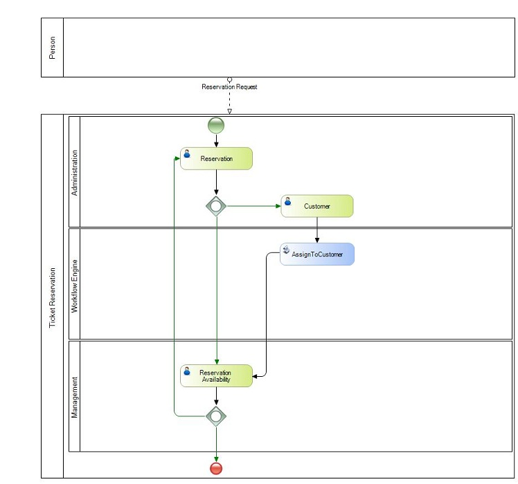

Artifacts are elements that provide additional information on a process with the purpose of making it more self-contained. They don't have an effect on the behavior of the flow while it is being executed.
There are four types of artifacts:
-
Group: It allows you to conceptually group the elements of a diagram. Dragging elements to a group associates them with it, and if later the group is deleted, all its associated elements will be deleted as well. Likewise, if the diagram is moved, all the elements will be moved at the same time.
-
Text Annotation: It allows you to add text to a process in the form of a tag. These tags can be connected to the process elements as part of a conceptual association which doesn't affect the flow's behavior.
-
Pool: It represents a participant in a process and are used when the diagram involves two separate business entities or participants. The activities within separate Pools are considered self-contained Processes. Thus, the Sequence Flow may not cross the boundary of a Pool. Message Flow is defined as being the mechanism to show the communication between two participants, and must connect between two Pools (or the objects within the Pools).
-
Lane: Lanes are often used to separate the activities associated with a specific company function or role. Sequence Flow may cross the boundaries of Lanes within a Pool, but Message Flow may not be used between Flow Objects in Lanes of the same Pool.
Below are examples of each one of these symbols:
Group Text Annotation
 
Lane

Pool

|